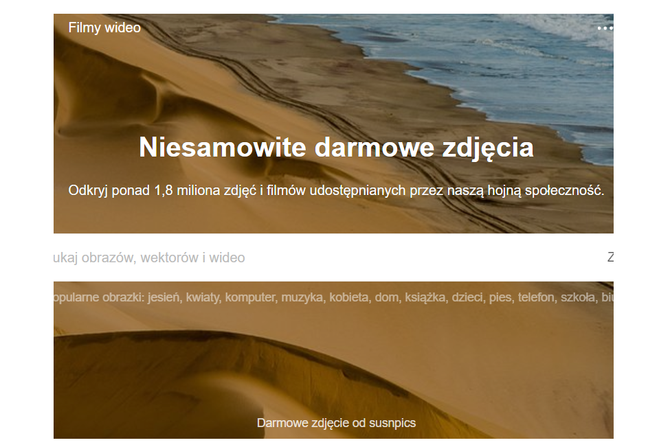
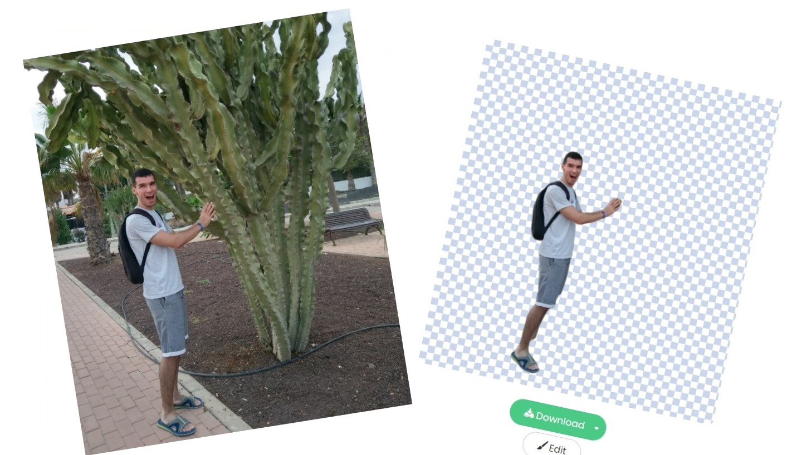

#2 Zdjęcia i filmy na stronę WWW lub bloga.

Prowadząc stronę lub bloga warto zamieszczać na nich własne zdjęcia i filmy, tworzymy wtedy coś
niepowtarzalnego, unikalnego. Zdarza się jednak ,że chcemy/musimy skorzystać z gotowych materiałów -
najlepiej darmowych!. Serwisów oferujących takie rozwiązania jest wiele. Osobiście korzystam z pixabay'a. To co mnie przekonało do niego, to przede
wszystkim dobrej jakości legalne materiały do darmowego użytku komercyjnego. Obszerna baza, która
ciąglę się powiększa. Czytelnie przedstawiona licencja przy każdym pobieranym elemencie, w
większości nie wymaga nawet przypisania. Dzięki tym ułatwieniom możemy poświęcić więcej czasu na
szukanie interesującej nas fotografii, zaś Każdy element możemy pobrać w odpowiadającej do naszych
potrzeb jakości/rozmiarze.
#1 Usuwanie tła/wycinanie postaci ze zdjęcia.

Dla grafika to chwila pracy, jednak dla osób niezwiązanych z obróbką zdjęć, może być to sporym
wyzwaniem. Programów do wyboru jest wiele, pobranie, instalacja, do tego jeszcze dochodzi nauka ich
obsługi -
nawet w minimalnym stopniu i tak zajmie trochę czasu. Znalazłem rozwiązanie tego problemu. Natknąłem
się niedawno na serwis remove.bg ,który szybko, łatwo i
bezpłatnie wykona to za nas. Wystarczy na stronie załadować wybrane zdjęcie, wcisnąć przycisk i po
chwili można pobrać gotowy plik na swój pc. Efekt końcowy oceniam na bardzo dobry. Do późniejszego
wklejenia wyciętej postaci, możemy skorzystać np. z darmowego edytora photopea. Jest to klon bardzo popularnego photoshopa, z tą
różnicą ,że nie trzeba go instalować, aktualizować, nawet zajmować miejsca na dysku ponieważ
narzędzie to
również jest dostępne online. Mam nadzieje, że zaoszczędzi Wam to sporo czasu szczególnie, jeśli
korzystacie z takich rozwiązań raz na jakiś czas!